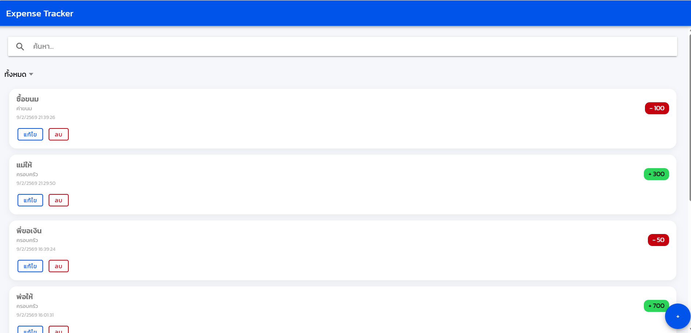

สรุปผลงานการฝึกปฏิบัติรายสัปดาห์
Week 1: Workspace Setup
ติดตั้งเครื่องมือที่จำเป็นสำหรับหรับฝึกปฏิบัติการในรายวิชา ทดลองสร้าง ionic-vue และ ionic-project



ภาคการศึกษา 2/2568
ชื่อสกุล: นายปวริศ กุลแก้ว
รหัสนักศึกษา: 663380019-2
ติดตั้งเครื่องมือที่จำเป็นสำหรับหรับฝึกปฏิบัติการในรายวิชา ทดลองสร้าง ionic-vue และ ionic-project